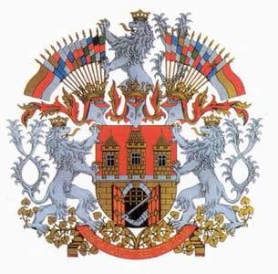

Основна інформація
Пра́га (чеськ. Praha) — столиця та найбільше місто Чеської Республіки,
адміністративний центр Середньочеського краю, а також двох його районів Прага-Захід та Прага-Схід.
Прага розташована в західній частині Чехії, в історичній області Богемія.
Прага відома поетичними назвами: Місто ста веж, Матір міст, Злата Прага.
|
|
Символіка
Прапор Праги являє собою прямокутне полотнище зі співвідношенням сторін 2:3,
воно складається з двох рівновеликих горизонтальних смуг червоного і жовтого кольорів. Прапор іноді використовується з розміщеним на ньому гербом Праги.
Герб має геральдичний щит іспанської форми і пофарбований в пурпурний колір.
У центрі щита зображена кам'яна фортеця з двостулковими воротами та трьома вежами. Ворота на фортеці розкриті, решітка піднята. У воротах видно руку, закуту в срібні лицарські лати і стискаючу меч.
Герб Праги:

|